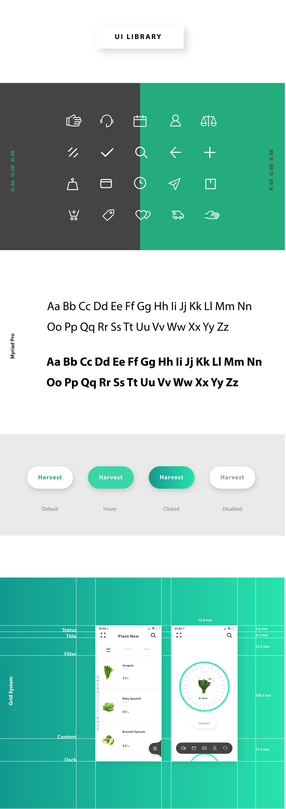

UI/UX Design
Design Direction
Brand Identity
Animation
Content Strategy
Vertical farming is a new agrotecnique, it uses artificial light, environment control and other indoor farming
techniques to produce plants in vertical layers. It’s not only about how much production can possibly cram
into a space, but also helping the users to rethink the better access to healthy food.
Based on the features of vertical farming and the freshness problem of greens, l combined this technology and mobile device to build a platform which can provide freshest greens to people by letting them be “real” farmers.
This project aims to create a new lifestyle and build an efficient user experience about planting and harvesting.
Based on the features of vertical farming and the freshness problem of greens, l combined this technology and mobile device to build a platform which can provide freshest greens to people by letting them be “real” farmers.
This project aims to create a new lifestyle and build an efficient user experience about planting and harvesting.
ROLE
Sheep
2019

An elevated web presence for the leader in life science R&D


Thanks for scrolling

*




Information architecture
& low-fi wireframe
& low-fi wireframe
Design assets
& Grid system
& Grid system

One of the key objectives for this app was to educate potential customers with clear and concise messaging.
Starting with the homepage landing experience, l developed an effective content strategy and streamlined user
experience.
When developing the new visual language, it was key for each element to capture the mission — to create a
brighter future by making clean energy products universally available and affordable. To embody this, l
designed a simple, warm, and inviting aesthetic, characterized by delightful imagery and approachable
typography.


Design iterations

User-centered design research


App Design

Say hi

üëã